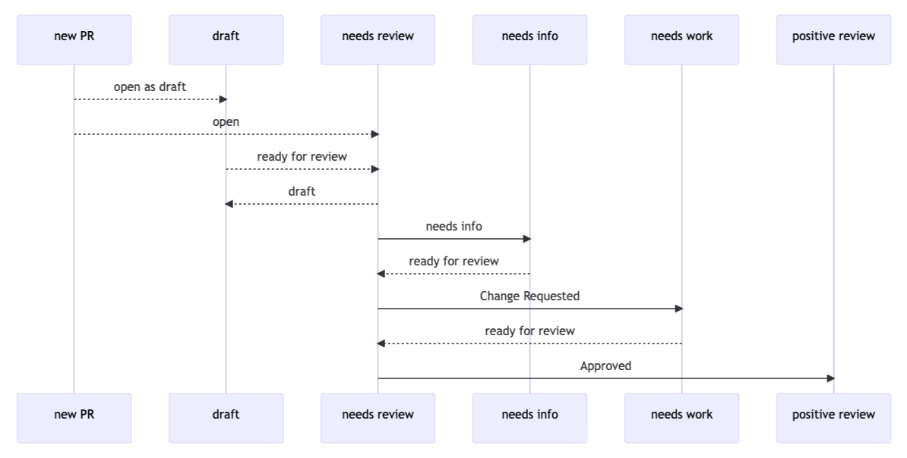

Using Git with GitHub¶
We continue our introduction to passagemath development from Development Walk-through. We discuss how to push your local changes to your fork of the passagemath repository so that your changes can be reviewed for inclusion.
Before proceeding, check that you have origin, passagemath, and upstream
remotes right:
[alice@localhost passagemath]$ git remote -v
origin https://github.com/alice/passagemath.git (fetch)
origin https://github.com/alice/passagemath.git (push)
passagemath https://github.com/passagemath/passagemath.git (fetch)
passagemath https://github.com/passagemath/passagemath.git (push)
upstream https://github.com/sagemath/sage.git (fetch)
upstream https://github.com/sagemath/sage.git (push)
Development workflow at a glance¶
Alice creates a new local branch and commits changes to the Sage source files.
Alice pushes the local branch to the remote
origin, her fork of the passagemath repo on GitHub, and with it creates a PR to the passagemath repo. When ready, Alice sets the PR toneeds reviewstatus.Bob, a developer acting as reviewer, examines the PR, looks through the changes, leaves comments on the PR, and requests fixes (
needs work).Alice makes more commits on top of her local branch, and pushes the new commits to the remote
origin. These new commits are reflected in the PR.Bob looks through the changes in the new commits and reviews the changes.
After a few of iterations of commenting and fixing, finally the reviewer Bob is satisfied, and then he approves the PR and sets it to
positive reviewstatus.
Creating a new PR¶
Suppose you have written an algorithm for calculating the last twin prime,
committed the code to a local branch based on the main branch. Now you
want to add it to Sage. You would first open a PR for that:
[alice@localhost passagemath]$ gh pr create
? Where should we push the 'last-twin-prime' branch? alice/passagemath
Creating pull request for alice:last-twin-prime into main in passagemath/passagemath
? Title Last twin prime
? Choose a template PULL_REQUEST_TEMPLATE.md
? Body <Received>
? What's next? Submit as draft
https://github.com/passagemath/passagemath/pull/12345
This will create a new PR titled “Last twin prime” in the Sage repo for the
branch pushed to your fork alice/passagemath from the local branch on your
desktop. The title is automatically derived from the last commit title. If you
don’t like this, then you can use the -t switch to specify it explicitly.
See the manual page of the command gh pr create for details.
If you did not provide enough details about the PR at the prompts, you may want to edit the PR further via the web interface.
Checking out an existing PR¶
If you want to base your work on an existing PR or want to review the code of a PR, then you would run:
[alice@localhost passagemath]$ gh pr checkout 12345
remote: Enumerating objects: 7, done.
remote: Counting objects: 100% (7/7), done.
remote: Compressing objects: 100% (7/7), done.
remote: Total 7 (delta 0), reused 0 (delta 0), pack-reused 0
Unpacking objects: 100% (7/7), 25.50 KiB | 2.83 MiB/s, done.
From https://github.com/sagemath/sage
* [new ref] refs/pull/12345/head -> last-twin-prime
Switched to branch 'last-twin-prime'
The command gh pr checkout downloads the branch of the PR. Just
like the create command, you can specify the local branch name explicitly using
the -b switch if you want.
Uploading more changes to GitHub¶
Once you have created a PR, edit the appropriate files and commit your changes to your local branch as described in Editing the source code and Making commits.
If you are ready to share the changes up to now, upload your new commits to your fork by:
[alice@localhost passagemath]$ git push origin
Enumerating objects: 13, done.
Counting objects: 100% (13/13), done.
Delta compression using up to 12 threads
Compressing objects: 100% (7/7), done.
Writing objects: 100% (7/7), 1.98 KiB | 1.98 MiB/s, done.
Total 7 (delta 6), reused 0 (delta 0), pack-reused 0
remote: Resolving deltas: 100% (6/6), completed with 6 local objects.
To https://github.com/alice/sage.git
+ 352d842907...56ffdab967 last-twin-prime -> last-twin-prime
Note that you do not push the branch to the remote upstream the Sage repo.
Instead the new commits pushed to the remote origin are shown in the PR at
the Sage repo.
Finishing it up¶
It is common to go through a few iterations of commits before you push the branch, and you will probably also have pushed your branch a few times before your branch is ready for review.
Once you are happy with the changes you pushed, they must be
reviewed by someone else before they can be included in the next
release of Sage. To mark your PR as ready for review, you should
set it to needs review status.
Merging the upstream main branch¶
It commonly happens that the main branch at the remote passagemath was
updated and you need to merge the changes there to your local branch. Then
you do:
[alice@localhost passagemath]$ git fetch passagemath main:main
This fast-forwards your local main branch to the upstream
main branch.
Now you go back to your working branch and merge the updated main branch:
[alice@localhost passagemath]$ git merge main
....
If there was no upstream change conflicting with the changes you made locally, this merge operation will finish cleanly. Otherwise, you are in merge conflict. This rarely happens since Git is smart in merging changes. However, once merge conflict occurs, you have to manually resolve the conflicts. The conflict resolving procedure is explained in Conflict resolution.